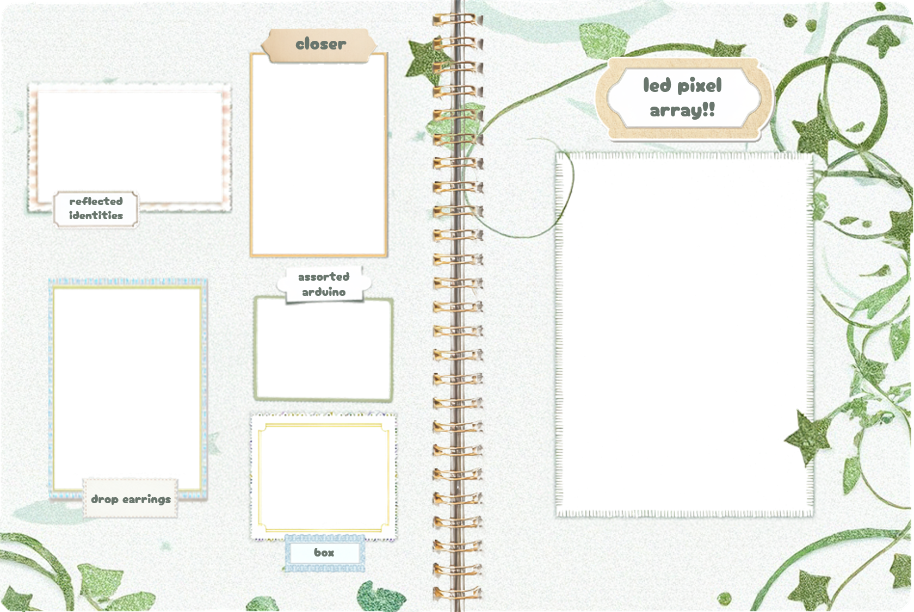
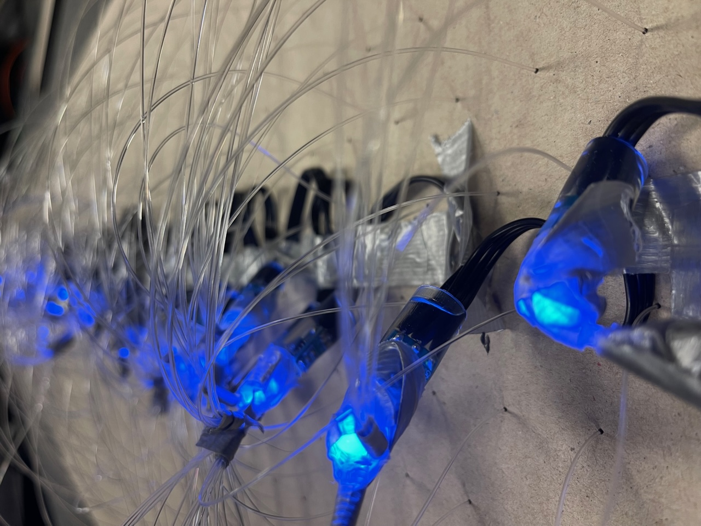
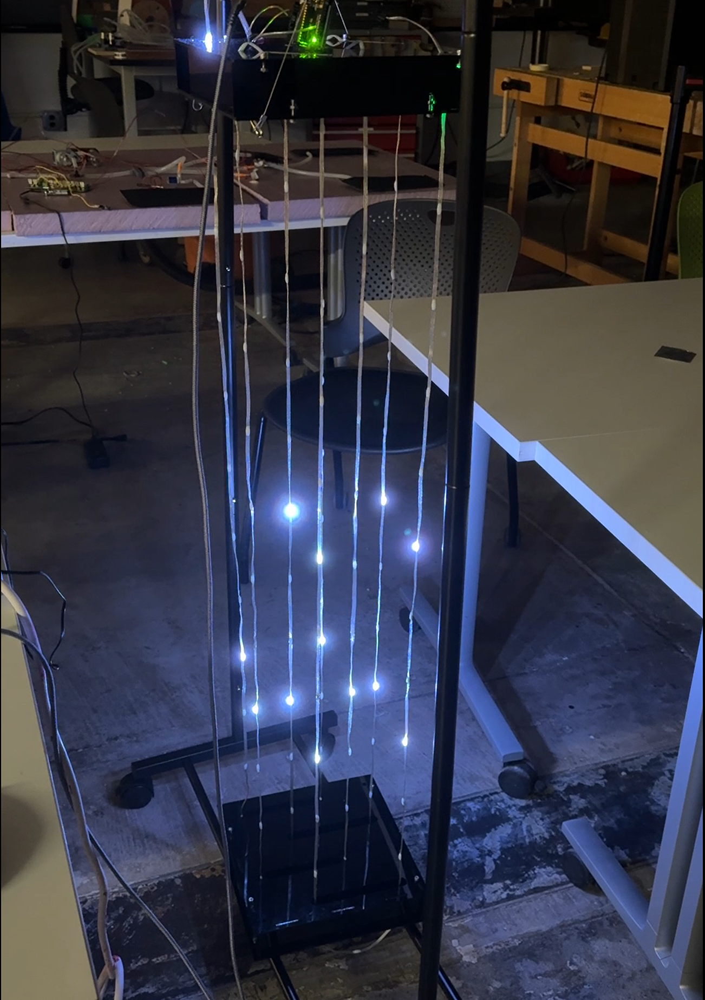
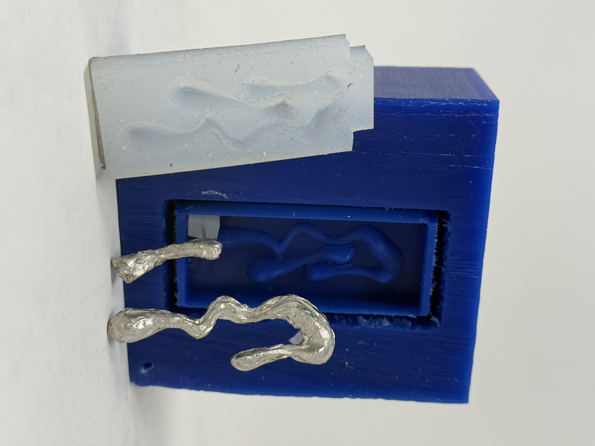

a capacitor-controlled drawing pad that gets translated to an led screen and volume controlled leds

an interactive exhibit that changes the color and visibility of fiber-optic displayed led lights based on the closeness of two participants to each other at either end of the board
six mirrors rotate, changing which version of oneself is displayed on a projector screen based on participant movements

3d led pixel array!! uses touchdesigner, python, arduino ide, and the wled api to create an audiovisual experience... linked to internal computer audio so able to play any song!!
a laser-cut box based on chicago's aqua tower. uses grasshopper to map the image of a wave to points in 3d-space

from a 3d rhino file to a cnc wax positive to the silicon negative to a pair of cast bismuth earrings